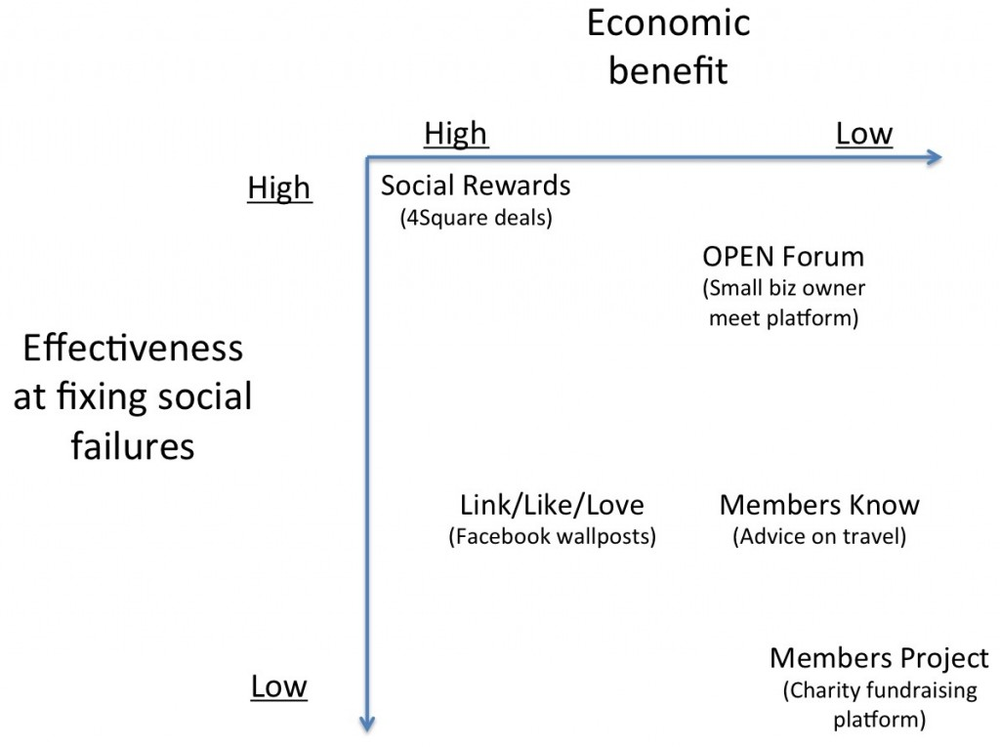

Social Strategy at American Express (CSN, Monday, Week 13)
competing-with-social-networksyear-twoWhat does Amex do?
Card issue:
-- Aspirational/premium image (fees), higher spending per cardholder than competitors
-- Direct to consumer (no issuers) = CONTROL, "closed loop"
but CAC is higher than competitors ($250+)
Transaction processing:
-- Charge higher fees to merchants
-- First-mover into value-add services: travel planning, concierge => consumer perception of safety
but limited availability of merchants
Funding liabilities:
-- 8% loss provisions (disputed charges; non-payment)
And then they start getting into social...

{kind=link}
Strengths of AmEx execution:
-- Willingness to experiment.
-- Evolve from mediocre initiatives (Members Project) to stuff that drives business results (Social Rewards Program). Develops in-house social proficiency; solves the "Legal needs three days to review every tweet" problems; continuous improvement.
-- Because CAC is ordinarily so high, lots of potential in social/network effects pay off handsomely.
-- Capitalizes on existing AmEx positioning/overall strategy (trustworthiness of brand means that consumers are more likely to link credit card to FourSquare account; premium image means that consumers are more likely to brag about AmEx deals/share with friends).
-- Ends up with AmEx thinking about their core business differently (potential to drive traffic to retailers; loosely competitive with Groupon/LivingSocial).
Challenges:
-- Still a big company.
-- Change takes time.
Takeaways:
(1) Usually, everybody's social strategy starts with taking your initial product and sprinkling in badly-designed social elements (make a Facebook page). Need to evolve from there.
(2) Usually, there is some element of trade-off between fixing social failures and effectively monetizing. It's hard to find programs that (1) make a boatload of money and (2) offer awesome social solutions.